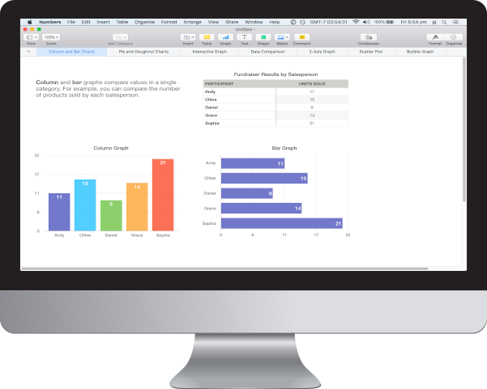

Better digital habits. Better workplaces.
theCucumber.appMac | Windows

Digital Eye Strain negatively
impacts 71% of employees.
Yet eye strain remains one of
the most overlooked health issues
in the workplace.

Eye-strain
Migraines
Backpain
Bad digital work habits are
bad for business.
-
70.6%
of employees say digital eye strain impacted their ability to work. -
191-208
days annually per employee working less productively.
-
29%
decrease in productivity. (loss of $799 USD/worker in Japan in 2011) -
30%
decrease in quality of life.
It’s time to refocus.
Improve focus and productivity in a blink of an eye.
Schedule micro-breaks.
Synchronized team breaks.
Presentation pauses.
Blink alarm.

No excuses
No Skip gets your team moving towards better digital habits, today.

Made for managers, leaders, gamechangers
Because great digital practices create better, more productive workplaces.